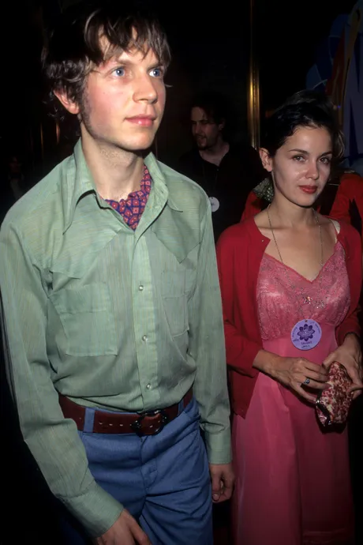

It was the summer of 2000, and Leigh Limon was working late on the set of Southlander, an independent movie her boyfriend, the musician Beck Hansen, had a supporting role in. The film followed the trials of a struggling keyboardist who gets hold of a magical synthesizer, only to lose it and embark on a picaresque journey to get it back. Beck was playing a shabby, malnourished musician living in a shack who acts as an emissary of a weird celebrity cult. The character was called “Bek” — the name Beck had been given at birth — and would be like a version of him that had never gotten famous.
The filmmakers, their friends Ross Harris and Steve Hanft, had hired Leigh to do styling for the picture. Beck had been touring, and she hadn’t seen him in weeks. He was coming back to Los Angeles that night, flying in from Japan. As she was finishing her work, she got a call. “Come home,” Beck said, sounding grave. “I want to talk to you.” Anxious, she told Harris and Hanft she had to go and headed to the Silver Lake home Beck owned and they lived in together, driving the Volvo Beck let her use. It was dark when she reached the low-slung, wide-set house.
A group of strangers were waiting for her in the living room. Some of them were in suits; others were in uniforms she recognized from her limited knowledge of the Church of Scientology: They were from the Sea Org, the church’s elite religious order.
Beck was there, too. He wasn’t looking at her.
One of the strangers, a blonde with an intense face and a dark suit, stepped forward. She informed Leigh she was Beck’s legal representative and would be accompanying them to the dining room for a conversation. Terrified, Leigh followed them. Beck then turned to face her. He seemed changed. In their nine years together, Leigh had often thought of Beck as a kind of charming insectoid alien in a human suit learning Earth customs. Now she saw Anakin Skywalker becoming Darth Vader.
“How could you?” Beck said flatly. “How could you do all of that?”
She said she didn’t know what he was talking about. He replied that he was done with her. They were over. And he’d better not see her on the Southlander set.

For the first decade of his career, Beck was a force to be reckoned with in the music industry. He sang songs that didn’t quite make sense in plain English but were somehow urgent and undeniable to those who listened to them. He went platinum multiple times over and sold out arenas around the world. His music was defiant and bombastic, and critics and fans alike regarded him as a kind of pop messiah.
Then, around the turn of the millennium, something changed. No one — not the press, not his fans, not even his friends — knew what had occurred. But it was clear something had. He destroyed the popular official message board where his fans gathered. His interviews grew vague and combative. His old friends didn’t see him anymore, and he abruptly broke up with Leigh. He maintained a regular output of music — in September, he released his first album in seven years, Ride Lonesome — but it turned inward facing and morose, then repetitive.
Over the past four years, I spoke to dozens of people in Beck and Leigh’s circle in the near decade they were together. (Beck did not respond to requests for comment; Leigh declined to be interviewed, but I spoke with people close to her thinking.) The shift in his life and music became most apparent, they told me, when Beck released Sea Change, a heartbreaking and deeply earnest inner chronicle of a breakup. Journalists identified the source of the album as Beck’s falling out with Leigh, and critics revered the LP as proof Beck had grown up as a songwriter, abandoning the old doggerel. For Leigh and others, the album was the story of how they lost Beck.
She could see him, but he couldn’t see her.
He was a skinny, shabby young man working in the gift shop at the Los Angeles Museum of Contemporary Art. She was visiting the museum, one of her regular haunts, on an afternoon in 1991. And she couldn’t stop looking at him.
He seemed to be about her age — late teens, early 20s — and he looked like shit. She stared in mild amazement. With his unkempt hair and ragamuffin clothing — was that a rope holding up his pants? — he reminded her of Huckleberry Finn or those cultists she used to see around Southern California when she was a kid, the Zendik Farm collective. They were a handful of families who were trying to live for art and nature; they invented their own musical instruments, printed their own poetry, and lived in huts made of garbage; even the teenagers seemed ancient. This guy behind the gift-shop counter had that look.
Leigh had always liked weirdos. In high school, she never went for the macho guys. Her first crush was on the cherubic lead child actor in Meatballs, the one who requires the aid of camp counselor Bill Murray to learn self-respect. She looked for the kind of guy whose true worth only she could see. Guys with untapped potential, even a touch of femininity.
A short time after that museum visit, Leigh went to Al’s Bar, a punk club in Downtown L.A. Her style at that time was angular, vintage Depression-era professional women’s apparel. On that night, she looked like a Rosalind Russell character in a ’30s screwball comedy, lost in a sea of mohawks and piercings. She saw her friend Ed Smith. They talked for a while. Then Leigh noticed a skinny guy clad in a ratty Daniel Johnston T-shirt, his hair a feral mess. His pants were being held up by a rope. She found him intriguing and went over to introduce herself. He said his name was Beck. He was still a nobody in the music world, an acoustic folkster who played open mics and hopped onstage unannounced before other bands did their sets.
The two of them spent the rest of the night pressed together in the crowded bar, shouting at each other to be heard over the sound of drunk youth. Beck and Leigh were brimming over with words — not about their own lives but about culture: old movies, avant-garde novels, French poetry, abstract paintings, and the infinite varieties of music. Later, she would put it together and realize he was the weird-looking guy from the museum gift shop; she wouldn’t mention it to him.
The first time Beck broke up with Leigh came about two months after they started dating in 1991. He called her on the phone.
“I just don’t think you like me,” Beck told her.
He didn’t say what that meant, exactly, but Leigh inferred that he was upset they hadn’t had sex yet.
“No!” Leigh pleaded. “I like you so much!”
Leigh found his frustration odd — he’d never pressured or bullied her for sex. They just hadn’t had it. And now he seemed sad, perhaps even angry about it.
Sex wasn’t that thrilling for Leigh. She was young; she’d never felt totally comfortable in her body. She’d had sex, but every time it felt like it was happening to someone else. Sex was a sign in a foreign language, illegible to her.
Beck hadn’t brought it up, and Leigh had been fine with that. Maybe it was weird, but that was what she liked about Beck: the way he seemed not just out of step but in a syncopated counter-rhythm with everyone around him. There was something about him Leigh felt kinship to. She simply wanted to dig through piles of vintage clothing, read obscure books, and spend time with her weird boyfriend. But he wanted something more. There was nothing she could do to convince him. He hung up on her. He had a habit of ending disagreements abruptly like that.
Three weeks went by. At first, Leigh was angry and ashamed. But as time went on, she couldn’t stop thinking about Beck. She felt a stronger connection with him than she’d had with anyone before. She had imagined chilling out with him indefinitely. She wanted that so badly. She figured she could muster up the gumption for some sex. So, perhaps against her better judgment, she called him. He said he was willing to give it another shot.
“Let’s go swimming,” he said.
“Where?” she asked.
“There’s a pool at my mom’s building,” he replied.
An odd proposal. But he was an odd guy. They met at the Koreatown duplex where his mother, Bibbe Hansen, and his stepfather, Sean Carrillo, were living at the time. Beck led Leigh down an endless hallway until they reached the unit Bibbe and Carrillo rented. He had a key, and they let themselves in. The place was messy and run-down, and there were huge smoke stains on the ceiling. On the living-room table was a giant bowl filled with cigarette butts, which Beck said was for an art project. Leigh figured these absent adults knew how to party. She had grown up in the suburbs with nature all around her. The scene in the duplex felt like the reason she didn’t much care for city living.
Once the two had changed into their bathing suits, they went swimming in the barely tended pool in the complex’s courtyard. It was calming. Soon they were laughing and splashing together. Leigh was reminded that she really liked this guy, even if he baffled her. Underwater, they blinked at each other through the dreamy haze of the chlorine, smiling.
A few days later, they had sex for the first time at Leigh’s apartment. As she’d predicted, she mostly dissociated through the process. It wasn’t bad, but she felt more like a witness than a participant. Not having sex had seemed to be a deal-breaker for Beck just weeks before. Leigh was expecting him to be more in the moment. But he, too, seemed vacant and dissociated. Their bodies were united while their minds wandered away.
Shortly after that, Leigh and Beck went to a hip hangout in Little Tokyo called Troy Café. Beck informed Leigh that Bibbe and Carrillo owned and ran the place. They’d started it up the previous year. While there, Leigh met Bibbe. She struck Leigh as an unusual character, wearing sunglasses indoors tucked under her long auburn hair. They talked a bit. Leigh got the sense that Bibbe was — like Leigh herself — out of place in Los Angeles. She seemed like a New Yorker, a stranger in a strange land. As Beck and Leigh fell further in love, Leigh started to see Bibbe more. She never saw Beck’s biological father. Beck hardly ever talked about his childhood or his feelings. Early on in their relationship, he mentioned he had grown up in Scientology but was out of the church. She was fine with that. They’d make fun of Scientology if it came up in conversation.
Bibbe Hansen met Beck’s father, David Campbell, at one of her first Dianetics meetings in Los Angeles. Several years her senior, Campbell was born in Toronto and raised in various places in the northern U.S.; he had converted to the Church of Scientology in the ’60s and had studied at the Manhattan School of Music before making his way west. In the fall of 1969, Bibbe became pregnant with Bek.
Campbell was a classically trained violist, and when Bek was a baby, he’d bring his son along when he went busking around Los Angeles, jamming with a guitar-playing Scientologist friend for cash to pay for their church courses. Eventually, Campbell started to find opportunities in show business, playing viola on Carole King’s hit album Tapestry. His success gave them privileged status within the church. Famousness was next to holiness. The family moved to a place in Hollywood, a block north of Sunset Boulevard and half a block away from the new Celebrity Centre.
According to people who grew close with him later, as well as his own mother, his parents rarely tended to him. Campbell was away working, and Bibbe was often out socializing. When Bek was about 5, he visited his paternal grandparents, who lived in the Overland Park suburb of Kansas City. His grandfather D. Warren Campbell was a Presbyterian minister. Everything was different in his grandparents’ house. When he returned to L.A., Bek came to understand that his nuclear family was unusual. He was ready to ask his mother some hard questions: “How come you don’t wet down my hair every morning and part it on the side, like Grandma? How come you don’t bake cakes so I can take them to school in my lunch? How come you don’t make me wash my hands all the time, like other mothers do?”
As Bibbe would later recall in a letter published in a fanzine, she sat her son down and delivered a maternal manifesto. “Bek, the reason I don’t do all these things is because I am not like Grandma and I am not like other mothers,” she told him. She would never bake cookies for him, or cakes, or make sure his hair was parted and his hands washed — “It’s not going to happen,” she said. But, she said, it wasn’t such a bad deal: “Because I also will never try to turn you into a robot, make you wear shit you don’t want to, make you do tricks like some kind of performing dog, or try to cut your dick off every time you turn around.”
Bibbe was never a devout, or even particularly engaged, member of the Church of Scientology. But her manifesto to Bek could have come directly from the church’s teachings. L. Ron Hubbard held that all children are merely “adults in small bodies,” according to many who knew him, and his teachings certainly accorded with that idea. He both praised and punished children as though they were grown-ups. They did not deserve special protection. They were responsible for their own safety.
Left to his own devices, Bek figured out how to cook hamburgers on the stove for himself and his younger brother, Channing. At some point, to his father’s delight, he asked for his first acoustic guitar. He never asked Campbell for help in learning how to play. At a Scientology-run school, Beck (his name acquired the C there) learned little about mathematics or history. During those years, he endured things that can harm or warp a child. When he was 15, a Scientology “ethics officer” discovered that a 32-year-old woman, who considered Beck her “soul mate,” was sleeping in his bed at night. The relationship with the older woman ended after it was discovered, but the only person punished for it was the ethics officer who first reported the situation; he was caught up in accusations and counteraccusations for years.
Around that time, with Channing and a few friends — and with Bibbe’s assistance — Beck started a mimeographed poetry magazine by and for young people. They called it Youthless. A French documentarian, directing a movie about the contemporary poetry scene in Los Angeles, heard about the magazine and filmed the teens as they crafted an issue. The documentary, Innerscapes, was released in 1988. “I think kids are basically responsible for their own situation,” teenage Beck mused to the camera and the viewer. “I wanted to be an artist. I wanted to express myself. I wasn’t going to sit down. I went and took responsibility for it and went out, and we’re doing this magazine.
“But I think if kids feel they’re being used or abused,” Beck continued, “they’re ultimately responsible for their own condition.”
Stardom arrived to a degree Beck and Leigh never could have anticipated.
First came the surprise success of his slapdash rap single “Loser,” released on independent label Bong Load in the spring of 1993. It would become a nationwide radio and MTV hit. Beck signed with Geffen Records and in 1994 released Mellow Gold (certified platinum), which he followed with the critical and commercial smash Odelay (certified double platinum) in June 1996. He embarked on a massive multicountry tour that never seemed to end or run out of explosive, genre-defying energy.
By late 1996, there was Beck Hansen and there was “Beck.” Beck, as a concept, was largely built on Hansen’s music and voice: his stringy form and his deliberate misdirection in interviews, his alternating folksy shyness and funky bombast onstage. But his collaborators helped turn Beck into a cultural product, making videos, shooting photos, providing musical inspiration for samples. Beck was an art piece, a Happening, a mobile performance installation made by the tireless work of a small coterie of people, including Leigh. Leigh had been Beck’s girlfriend for five years by this point, and she was his stylist, defining his much-praised look. She combed vintage and thrift shops, scouring fashion history to put together outfits for Beck that were eclectic yet consistently cool. It wasn’t an easy target to hit, but Leigh’s sense of style was unerring. Under her curation, Beck became a trendsetter. And he received her ideas with enthusiasm. When Beck prepared to put out a single of one of the dreamier tracks from Odelay, a breezy ode to wandering called “Jack-Ass,” he asked Leigh to design the artwork and she found the perfect image: an illustration of a grinning, braying donkey from an old children’s book. The image would be distributed on an official Beck T-shirt. Whatever Leigh got paid for her work went directly into Beck’s bank account, which she had permission to draw from. She didn’t have her own. But she took a lot of pride in her part of Operation: Beck.
Recently, a new member had joined the creative team: Beck’s father, David Campbell. Campbell hadn’t been very present in Beck’s life since 1988 or so, after Campbell had split up with Bibbe and started a new family. But curiously, not long after “Loser” hit big, Campbell reemerged in Beck’s life and reestablished a long-dormant paternal relationship. (A representative for Campbell did not respond to requests for comment.)
The “Jack-Ass” single featured a new track called “Strange Invitation.” It was a rerecording of “Jack-Ass” with a studio orchestra gently playing behind Beck’s voice. The orchestral part was written and conducted by Campbell. It was his first official collaboration with his son, and it would be far from the last. Still, Beck didn’t seem to want to talk, in private or in the media, about having grown up as the child of a successful music-industry hustler — much less one who was so proudly and publicly involved with a controversial religious movement. He never mentioned his dad to interviewers, not even now that Campbell was back in his life. And he never breathed a word about Scientology to journalists. (He publicly acknowledged his relationship to the church for the first time in 2005.)
Sometimes, Leigh thought Beck should be more forthcoming. To her, there was nothing about the real Beck that seemed necessary to hide. But it wasn’t worth arguing with him — it only made him shut down. He’d stop talking, revert to a blank stare. If they were out in public when such a disagreement came up, Beck might walk away, leaving Leigh alone wherever she was, even in a foreign city. That was just how he was. Leigh was used to it by now — his weird moments of distance, the unexpected silences she’d run up against once in a while.
As far as Leigh was concerned, the major problem in their relationship wasn’t Beck’s father. It was Beck’s bassist.
Beck had needed a new bass player, so he’d mentioned it to his father. Campbell happened to know just the guy: 26-year-old Justin Meldal-Johnsen. Born into the Church of Scientology and employed by Campbell as a studio gofer for years, Meldal-Johnsen was looking for a gig. Surely Beck remembered him; they’d met when they were both teenagers in the church and Meldal-Johnsen had started working for Campbell. Why not give him a try?
Perhaps it was coincidence that Campbell suggested the bassist; perhaps it was part of a broader charm offensive from the church. Either way, Beck hired Meldal-Johnsen. And Leigh couldn’t stand him. He projected a wild and goofy image, performing outlandish dance moves and occasionally groping Beck onstage for comical effect. Despite these antics, he had an oddly quelling effect on fun behind the scenes. As a Scientologist, Meldal-Johnsen didn’t smoke weed, which was fine — Beck didn’t smoke either. Pretty soon, though, no one else in the band could toke up with Meldal-Johnsen around unless they wanted to be lectured about drug abuse. And he was always around. Eventually, marijuana was banned from the tour bus altogether.
Meldal-Johnsen wasn’t just friendly with Beck. He seemed devoted to him in a way Leigh didn’t like; it seemed inappropriately intimate, even proprietary. Leigh suspected he was there as an agent of the church, angling to get her boyfriend to drop in for a Dianetics seminar or an auditing session, just for old times’ sake.
All this had an effect. Beck was intrigued enough that he asked Leigh to join him for a so-called Purification Rundown — a Scientology practice in which you go into an incredibly hot room, take niacin pills, and attempt to “sweat out” your “toxins.”
Leigh thought it sounded like a Native American sweat lodge. She had Latino roots on one side of her family, and she liked to think one of her ancestors might have done something similar. She went to the “Purif,” as it was known, and had a great time. As they were finishing up, one of the Scientologists administering it asked if Beck and Leigh would like to sit for an auditing session. They politely declined.
Leigh started worrying when the phone started ringing. And ringing. And ringing. She’d pick it up and there would be nothing. Just silence. Sometimes, she could hear someone breathing. She started to suspect there were Scientologists on the other end of the line.
It was 1998, about two years into Beck’s collaboration with his father. Beck agreed the calls were probably the church, and he told Leigh to just ignore them. They began screening their phone calls, waiting for the machine to pick up. Often the person calling let the tape run out, never saying a word.
To make matters worse, Leigh’s home had been invaded by musicians. Technically, it wasn’t actually hers, insofar as Beck’s was the name on the deed. He was also, technically, her primary employer — most of her styling work was for his videos and photo shoots. Perhaps she shouldn’t have become that financially dependent on her boyfriend, but it had never seemed like a problem. Until now.
She found herself marginalized in the house whenever Meldal-Johnsen, Campbell, and the others were over for their 16-plus-hour workdays. Beck was really throwing himself into this new record. He was done with being shaggy — this would be an album of precision.
It was November 1998, and he’d just released his stripped-down, folkie Mutations to rave reviews, but he was already telling reporters it was a “parenthetical work,” not the “true” follow-up to Odelay. Since the summer, sessions had been ongoing for that next album, which Beck was going to call either Midnite Vultures or I Can Smell the VD in the Club Tonight. “VD,” in that context, stood for “venereal disease.”
The songs were a dangerous dance with gender, sexuality, and race. The brash and brassy “Sexx Laws” had a chorus in which Beck said he was “a full-grown man” but “not afraid to cry,” a line that evoked soul records of the ’60s — but that also felt delightfully out of place in the world of late-’90s rap-rock hardness. “Hollywood Freaks” was a rambling, surreal rap about life in L.A. featuring strange, sexualized non sequiturs like “Norman Schwarzkopf! / Something tells me you wanna go home!” On many of the songs, Beck broke into a falsetto that was a direct homage to Prince.
In particular, Beck tinkered with a Prince-ish ode in partial tribute to Leigh. It was an R&B slow jam about the narrator seeking the sexual company of a mall employee named Jenny — and her sister, Debra. Most of it is pure L.A. satire and fantasy (“Like a fruit that’s ripe for the pickin’ / I wouldn’t do you like that Zankou Chicken” — a local chain), but the narrator mentions taking his date to Glendale for a “real good meal.” Leigh used to work at the mall there. The song was not yet released, but it had become a live staple.
Leigh felt weird about the whole thing, especially the track called “Debra.” He hadn’t even acknowledged that the song was about her. Leigh feared the tracks might be too arch, too pretentious, too insincere. They sounded like cocaine music, and Beck didn’t even do drugs. The result was a record that was ferociously sexual, hidden behind a thick plexiglass wall of ironic remove. She heard her boyfriend sing “Sexx Laws” through their semi-soundproofed walls. She could make out the refrain and thought about whether she’d ever seen her full-grown man cry. She couldn’t think of a single time. He was singing about passion, but they hardly touched each other anymore.
Leigh suspected that growing up in Scientology had been traumatic for Beck. Still, she had no idea what, specifically, might have happened to him. He said so little about his upbringing. Leigh liked Campbell, but she remained deeply suspicious of the other church members. When Leigh confronted Beck about all the Scientologists who were now in their lives, he said he had no plans to rejoin the church. She didn’t feel reassured by how he said it.
“Leigh,” he said, “Scientology doesn’t make you a better or worse person. It just makes you more of who you are.”
As the summer of 1999 waned, Leigh came to Beck with a proposal — she wanted to go on a camping trip. She’d never really been a city girl, and she missed nature. She begged Beck to take a break from his music and commune with her in the woods somewhere. She wanted to hit the RESET button.
Beck agreed. Then, mere days before they were set to go, he got a phone call at their house. Leigh could hear him talking excitedly. He hung up and ran to tell her he’d just gotten an incredible opportunity: David Bowie wanted him to remix a new song called “Seven.” Indeed, Bowie wanted Beck to come up with two remixes, each in a different style. He said he had to cancel the camping trip.
It was at that moment Leigh decided it was over between her and Beck. Only she didn’t tell him. She was nonconfrontational, perhaps to a fault. She felt too chicken to outright dump him. More important, he was still the source of her paychecks and housing. When he prioritized Bowie over her, her last embers of passion fizzled out. Beck was hardly spending time with Leigh anymore, and he had never been the most emotionally intelligent guy. So if he noticed his girlfriend’s apathy, he didn’t let on. He just went back to the studio and then to his never-ending world tour.
Midnite Vultures was released in November 1999. Geffen Records pushed the album as best it could and had high hopes for another Odelay, but sales paled in comparison to that album’s. Critical response was mixed with even the positive write-ups criticizing Beck for giving in to his most emotionally empty impulses. “Midnite Vultures is filled with wonderful little quirks,” the website AllMusic wrote. “What prevents the album from being an unqualified success is the sneaking suspicion that for all the ingenuity, it’s all a hipster joke.” Or, as Q magazine put it, “As musically dazzling as Midnite Vultures often is, the one criticism that can be still leveled at Beck is that his songs remain strangely soulless … failing to ever really grip the emotions or stir the soul.”
The reception of Midnite Vultures was, in its way, a death knell for the eclectic era of ’90s “alternative music.” Major labels would rarely take chances on albums as weird as that one again.
By the spring of 2000, Beck and Leigh had settled into a depressing dynamic: she the ignored, unmarried housewife; he the jet-setting, increasingly exhausted rock star. It didn’t seem to Leigh like anything would change anytime soon. Beck was as committed to the relationship as he’d always been: monogamous but distant.
In the middle of May, Beck once again kissed Leigh good-bye and embarked on some tour dates, these ones in Japan. He had nine shows booked there, a country where he’d developed a sizable fan base.
The Beck who left for Japan was not the Beck who came back. The precise details of what happened there are obscure, and representatives for Beck did not respond to my requests for comment. What seems likely, based on interviews with those close to him — and given what transpired next — is that someone from or working for the church contacted Beck while he was there and presented him with information, much of it untrue. And it was all about Leigh.
Leigh, Beck was told, was a drug addict who had been cheating on him behind his back. He was presented with a real email she had written to a friend — Ed Smith — complaining about Beck’s failings as a boyfriend. Other materials also may have been presented to him. Only Beck can say for certain.
What is clear is that Leigh saw none of this coming when she came home to meet Beck on that night in the late spring of 2000, when he got back from Japan. After hearing Beck’s tone, Leigh dissociated for long minutes while her boyfriend delivered a furious soliloquy about her alleged sexual profligacy and rampant drug abuse and how it had been ruining his life. When Beck finished, his lawyer asked Leigh to follow her to the table to sign some paperwork. Before Leigh could respond, the lawyer informed her that she wouldn’t receive any of her possessions in the house unless she signed the papers.
Beck left the room. Leigh sat down and signed what was put in front of her without reading any of it. The lawyer collected the papers and said Leigh was to leave the premises.
“What about my stuff?” Leigh asked.
“We’ll contact you,” the lawyer replied.
Leigh was shuffled out of the house. Beck didn’t reappear to say good-bye. The door shut firmly behind her.
She stood alone on the lawn. Without Beck, she was not just single — she had no job, no bank account, no house. God, Leigh thought suddenly, where will I even sleep tonight? Beck did not respond to requests for comment on the breakup.
That night, Leigh wandered to the somewhat nearby home of a couple she and Beck had been friends with. They took her in. She slept on their couch. Days went by without a word from anyone about her belongings. She wasn’t about to try to call Beck. One evening, she went back to the house. She figured she could sneak in through the first-floor bedroom window in the early evening, when Beck was likely to be out; grab some of her things; and go. She arrived and crept up to the window.
When Leigh looked in, she was shocked to find that the bed was occupied. By Bibbe.
Before Leigh could process the visual information — her ex’s mom sleeping in her bed — Bibbe noticed her. They locked eyes. Bibbe said, perfectly intelligible through the glass, “Go away, Leigh.” And so Leigh did. (“None of this is true. Just specious gossip and muckraking,” Bibbe said when reached for comment.)
The next day, Leigh made one last desperate attempt to get her things. This time, the bedroom was empty, but the window was locked. She tried to force it open and wound up breaking the pane. She cut her arm on the glass, a big messy slash. She ran, trailing blood, and made it to a friend’s place. They wrapped up the wound with some towels. Nobody suggested she go to the doctor. She didn’t have insurance. Plus this wasn’t the type of crowd that was into conventional medicine.
Months went by. The wound on Leigh’s arm healed but left a scar. Word was passed to her: Beck wants to meet. It’s about your possessions. A time was set, the location an all-night diner in Silver Lake called Astro. At the appointed hour, Leigh arrived and found Beck waiting for her. It was just him this time. Him and another stack of documents.
For a few minutes, they made awkward small talk. Beck came across as robotic in his attempts to be polite. Then he said if she signed the papers he’d brought, she would receive her possessions and $60,000. Leigh didn’t know what to say. She was being bought off, but she didn’t have many options.
She signed what he put in front of her, not looking at the details.
He handed her a check for the promised amount. She would have to figure out how to cash it, but that was a problem for later.
As she got up to leave, Beck looked her dead in the eye and said, “Leigh, you’re gonna be fine.” She almost wanted to laugh. He said someone would get in touch with her about her things from the house. No one ever did.
More months passed. Leigh started to get back on her feet. She got some styling jobs. She took comfort in her family. She reconnected with friends. One of them, a guitarist named Jason Falkner who knew Beck, invited her to his New Year’s Eve party for the changeover from 2001 to ’02.
Leigh arrived and quickly saw that Beck was there too. She decided to keep her distance.
Except a woman who knew both of them eventually grabbed Leigh and more or less threw her into Beck. Now he saw her. For a panicked moment, the two of them just looked at each other. The world froze. And then Beck broke his terrified gaze. He turned and almost flew out of the room.
The following summer, Leigh started hearing rumors that Beck’s next album was about her. About their breakup. She braced herself. Nothing could have prepared her. When Sea Change was released in September 2002 to critical acclaim and significant sales, Leigh became the Hester Prynne of American pop music, bearing her scarlet letter of (perceived) adultery. Leigh’s infidelity was taken for granted by journalists: “He discovered she had been cheating on him,” a writer at The Guardian wrote in a glowing profile of Beck and his new record, citing reporting on the split.
At times, Beck seemed almost embarrassed that he’d put out such a transparently personal record, let alone that he had to explain it. A Blender profile by Dorian Lynskey gave a good sense of how awkward the interviews for Sea Change could be:
“Listeners will naturally assume that some of these songs are about Leigh Limon. Were they written after you separated?”
“Er, a little before … after, but before. I don’t know. [Sarcastically:] I’ll send you the dates. I have them written down on my calendar at home.”
“Has she heard these songs yet?”
“No. [The album] hasn’t come out.”
“We know. We meant, are the two of you still in touch?”
His voice goes quiet, his mood arctic. “That’s none of your business.”
The media never tired of describing Sea Change as his great breakup record. Its Wikipedia entry still says it came about after Beck “discovered Limon had been having an affair.” If you Google Leigh Limon today, one of the AI-generated suggested results offers this overview on Sea Change: “The impetus for these songs was the end of a long-term relationship. Weeks before his 30th birthday in 2000, Beck discovered that his fiancée and partner of nine years, Leigh Limon, had been cheating on him with another musician.”
According to those close to Leigh, around this time, she had started hanging out with Eastside L.A. musicians who reminded her of what Beck had been like when they first met. But she denied cheating on him. Many felt that, even if she did, that’s just the kind of thing that happens in one’s 20s and 30s. But nobody was asking for Leigh’s side of the story in 2002, nor did she want to risk speaking out against Scientology in public.
As the album grew in popularity, Leigh lost friend after friend. They didn’t explain themselves. Perhaps the music made them choose sides in a way they hadn’t felt they had to before.
Leigh eventually saw the writing on the wall: It was time to leave Los Angeles. She moved to the suburbs. Way out, closer to her family. She rebuilt her social circle, reuniting with old friends from childhood. Eventually, Leigh gave up on styling. The gigs had dried up, and she lived too far from Hollywood. She worked odd jobs, landing a full-time gig at a warehouse doing shipping fulfillment.
She finds it quite satisfying. She works standard hours and does physical labor, so she doesn’t have to stare at a screen or doomscroll all day. She has friends at the warehouse. She earns a steady paycheck. And she has a family, whom she loves. She made it to the other side of the river, against all odds. She still has that 25-year-old scar on her arm but hardly notices it anymore.
It’s May 11, 2024. Leigh is at the Rose Bowl in Pasadena, California. She’s watching New Wave legend Adam Ant play at the annual Cruel World music festival. Her friend had gotten VIP passes for the front of the pit and thought Leigh might want to go with her. Leigh said “yes,” so here she is. She and her friend are a few dozen feet from the lip of the stage, wearing their access lanyards. Leigh is bouncing along to the music when she notices a familiar head of hair in front of her as part of the VIP crowd.
It’s Beck.
She hasn’t talked to him, or even been in the same room as him, in more than 20 years. Five years prior, Beck told a reporter he wasn’t a Scientologist and that he had no connection or affiliation with the church. Should she say something? She’s surprised to find that her first thought is I hope Beck stays for the whole Adam Ant show so he can see how a real performer does things.
She decides she’ll remain silent. She’s already had enough Beck in her life. And he never turns around to find her anyway. Eventually, before the set is over, Beck walks away, never having noticed his ex. Leigh silently chuckles to herself. His loss, she thinks. She could see him, but he couldn’t see her.
Adapted from the forthcoming book The Last Temptation of Beck: The Untold Story of a Pop Messiah, by Josephine Riesman, to be published by Atria Books, an imprint of Simon & Schuster, LLC. Printed by permission. Copyright © 2026 by Josephine Riesman.